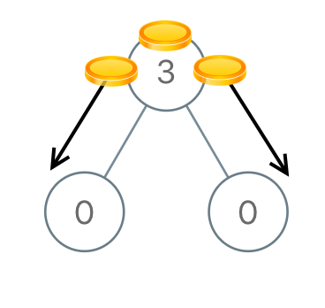
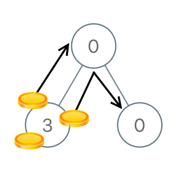

979. 在二叉树中分配硬币
后序 DFS 算每棵子树的净流量（硬币数−结点数）：每条边必须运送 |净流量| 枚，累加即答案。
思路
- 子树的净流量 = 子树硬币数 − 子树结点数：正 = 多余的要送出去，负 = 缺口要补进来。
- 后序遍历：先算左右孩子的净流量；父结点处
ans += |左流量| + |右流量|——每条边都要过这些硬币，一次移一枚。 - 自己的流量 =
val + 左 + 右 − 1，继续交给父结点；每条边的运送次数下界就是 |净流量|，且可以达到。
图解
最优解
1class Solution {2 private int ans;3 4 public int distributeCoins(TreeNode root) {5 ans = 0;6 flow(root);7 return ans;8 }9 10 // 返回子树的净流量 = 硬币数 − 结点数：正 = 多余的要送走，负 = 缺口要补11 private int flow(TreeNode node) {12 if (node == null) return 0;13 int l = flow(node.left);14 int r = flow(node.right);15 ans += Math.abs(l) + Math.abs(r); // 每条边都要运 |净流量| 枚硬币，一次移动运一枚16 return node.val + l + r - 1;17 }18}题目
给你一个有 n 个结点的二叉树的根结点 root ，其中树中每个结点 node 都对应有 node.val 枚硬币。整棵树上一共有 n 枚硬币。
在一次移动中，我们可以选择两个相邻的结点，然后将一枚硬币从其中一个结点移动到另一个结点。移动可以是从父结点到子结点，或者从子结点移动到父结点。
返回使每个结点上 只有 一枚硬币所需的 最少 移动次数。
示例 1：

输入：root = [3,0,0] 输出：2 解释：一枚硬币从根结点移动到左子结点，一枚硬币从根结点移动到右子结点。
示例 2：

输入：root = [0,3,0] 输出：3 解释：将两枚硬币从根结点的左子结点移动到根结点（两次移动）。然后，将一枚硬币从根结点移动到右子结点。
提示：
- 树中节点的数目为
n 1 <= n <= 1000 <= Node.val <= n- 所有
Node.val的值之和是n
题面取自力扣当前版本。
数据快照 2026-11-04。题面版权归力扣所有，本站点仅供本人学习使用，请勿对外发布。